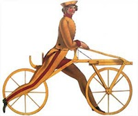
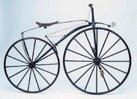
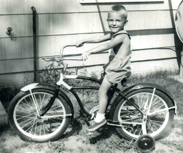
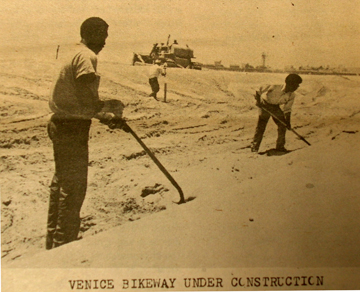
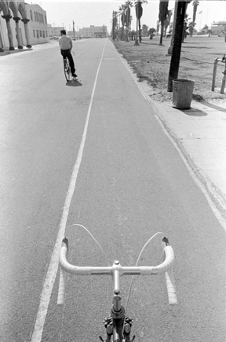
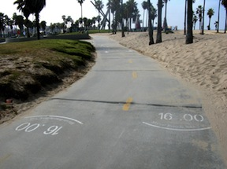
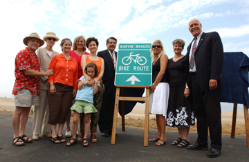
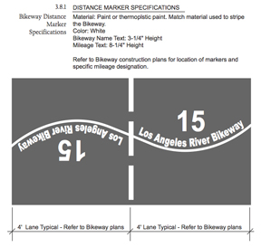
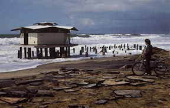

How the bikepath changed Venice
Bicycles are ubiquitous these days, especially here in Venice. Everybody, it seems, is pedaling and going green. They've even cropped up in the official old-fogey media; on CBS Sunday Morning a while back, and featured in AARP Magazine. You see flyers tacked to power poles for Super Beach Cruisers [next to those Eliminate Your Accent posters], and just try to find a spot to park your or any bike at the Santa Monica Pier on any summer Thursday night. Valet, or not? Ridiculous!
For me, it's a "Don't you get it? The bike is what it's all about!" kind of thing. Two wheels are the only way. I've always maintained this, throughout my entire life, true to my heart, the only way to get around, since I was knee-high to a ... Oh, now, yah got me goin again... ramblin', like in that Lebowski movie...
To me, a bicycle is an essential part of life, and the Westside culture helps ratify that feeling. We, of the flat, horizon driven topography, the archetypical beach environment and the coolness of doing our daily tasks while bicycle energized, have come to the fore. And so, in keeping with this whole bicycling, green-moving theme, here's a little history on bikes. Did you know that vehicles for human transport that have two-wheels and require balancing by the rider, by definition, date back to the early 19th century? Or that the first means of transport making use of two-wheels, and thus the archetype of the bicycle, was the German draisine,  the dandy horse, or "running machine", dating back to 1817? And I'll bet that you were uninformed to the fact that the term 'bicycle' was first coined in France in 1890. Or that the first recorded tryout of a velocipede in Los Angeles occurred on April 25, 1869 when a carriage-maker's apprentice took a tumble at the junction of Main and Spring Streets. By 1883 wheelmen were careening about the streets downtown at such a clip that pedestrians called on the City Council to draft an ordinance requiring them to install bells and lights as warning devices.
When I first visited Venice, there was a down-right "June-gloom" cast about the city. No liquid sunshine, no beach bongo summer, just cool bohemian vibes.  It was the early summer of 1972, and although I just sauntered down the tattered boardwalk, probably with my mouth agape, I was aware of the new bikepath, and how, if I could get a bike, I'd just ride, baby, ride, til the night swallowed me up. Like so many others were thinking and doing at the time.
Little did I know what a communal current I had hit upon. Eight months later I was living in West Hollywood, driving down to the parking lot at the end of Venice Boulevard every weekend, to rent a bike and cruise Venice. That's all I did. Up to the Santa Monica Pier and a hot dog on a stick. Then back to Venice, and sometimes along West Washington, with their unique antique shops. Like the one fashion emporium all painted in silver...
I think today if you'd ask the question, "What do you think is the main bloodstream of Venice?" you'd get quite a varied initial response. Probably the boardwalk would come out #1, of course, but what do they know? It's all about the tourists. Or quite possibly, Abbot Kinney. But for us locals, in my opinion, it's truly the bikepath that made and maintains today's Venice as the spectacular attraction that it is. Without the easy perusing along the ocean-side provided by the bikepath, which opened in 1972, Venice would probably still be stuck in some old post-hippie time-warp, like Telegraph Avenue in Berkeley. Or maybe still exist in some of its old carnie, derelict spirit, nothing like the post-modern community of today. All thanks to the bicycle.
Bikes have always played a big part in my life. I easily remember each one I've ever had. There's photos of my 4th birthday with my first 2-wheeler,  then the big red scoop-fendered bike, the cool black cruiser with chrome fenders during high school, the white dilapidated English racer in college, Mike the Bike in Venice, my current Motobecane. All good friends. A day doesn't usually go by when I'm not out cycling around town. So when I talk about the Venice bikepath, I talk about a very dear part of me.
In researching this article, I wanted to present the history of the bikepath in as true a presentation as possible. Even after contacting the Department of Recreation and Parks on its history, all I got was a bunch of nonsense about "it's now owned by the county," and " try the local historical society, but they're very poorly operated." I mean, what...?
Anyway, let's go back in time, with the LA Times, the Outlook, and some of the other local rags back then to get a take on the story as it was happening almost 40 years ago.
--
Protect Integrity of Tideland Funds
3-22-71 LA Times
Eight months ago, the City Council and Mayor Sam Yorty agreed that a $2.8 million windfall from an oil exploration lease should go into permanent improvements at municipal beaches.
Councilman Marvin Braude contends the Legislature clearly intended that tidelands funds be used for prudent harbor and recreation improvements, not for general fund operation and maintenance.
--
1-20-72 LA Times
Approval of Venice Tramway, Bike Path Detoured by City
City approval of a plan to install a combination bicycle-tramway in the center of Venice Beach has been postponed for two weeks to allow the city to restudy its proposed routing.
The City Council's Recreation and Parks Committee ordered the Department of Recreation and Parks to review its proposal and to consult with local residents who have protested they were not consulted while the plans were being developed.
The city's proposal calls for a 22-foot wide bike and tramway arching from the Santa Monica city limits to the Marina del Rey entrance channel.
The protests are from residents between Santa Monica and Washington Street, who indicated they wanted the tramway closer to Ocean Front Walk, with a lawn between the two thoroughfares, picnic tables and bicycle racks.
Other complaints include the pathway's lack of safety provisions, difficult access for the elderly and bikers who must cross a wide expanse of beach to get to the pathway, lack of maintenance plans, lighting and, residents added, it will be ugly.
--
3-72 Beachhead
Bikepath
In a community bikepath workshop on February 2, "various points of view came together, a cross section of young and old," according to Ken Norwood, Venice advocate planner and private planning consultant.
"Local people did a better, more thoughtful job than the professionals from the Department of Parks and Recreation. It was beautiful to see consensus in a non-structured community forum."
Norwood said the meeting resolved the issue of the bikepath north of Washington Street and preferred to postpone any decision on the proposed tramway, but "the controversy still rages over the bikepath south of Washington."
Meanwhile the City is hastily reconsidering its idea of running a cement swath down the center of the sand. They have met a concerted and determined frontal effort by different community and ecology interests to stop this mid-beach bikepath proposed by the City.
--
3-2-72 LA Times
Venice Bikeway Plans Accepted by Committee
Revisions Will Move Path Nearer Existing Walk; Some Opposition Remains
The adopted measure replaces the original plan which caused considerable controversy with its concept of a 22-foot-wide strip down the center of the beach.
The revised plan prepared by the Recreation and Parks Department staff, moves the path closer to the existing Ocean Front Walk from the Santa Monica - Los Angeles city border south to Washington St., and eliminated it entirely south of Washington along the affluent Venice Peninsula to the Marina del Rey entrance channel.
Peninsula residents have long opposed placing a pathway close to their homes, even though the city owns a 10-foot right-of-way immediately west of the expensive homes. The city has chosen not to push for its further development because of possible lawsuits by property owners which could delay the project for two or three years.
The decision follows several weeks of meetings in which planners, property owners and residents clashed over the proper means of installing the sorely needed pathway.
Commissioners eliminated a proposed tramway component which would have called for construction of a 22-foot way instead of the approved 14-foot width.
A proposed view park to be built on the north rock jetty strip of the marina entrance channel will not be affected by the pathway's cancellation.
As approved, the bikeway north of Washington St. will meander 10 to 35 feet from the existing promenade, with the land in between improved with landscaping, park benches, bike racks and picnic tables.
--
3-8-72 Evening Outlook
LA Council Okays Bikeway in Venice
The Los Angeles City Council endorsed Tuesday a bobtailed bikeway in Venice.
The council asked that the Department of Recreation and Parks "identify an acceptable and appropriate location for the bikeway" south of Washington.
The original pricetag on the program approved Jan. 13 was more than $4.4 million. The total has been reduced with the shortening of the bikeway and the elimination of two of four planned restrooms south of Washington Street.
--
5-10-72 Santa Monica Independent
May 18 Hearing Set
Group Files Suit On Bicycle Path
A group of Venice property owners Tuesday filed suit in Los Angeles Superior Court to stop construction of a three-mile bike path along Venice Beach from the Santa Monica city line to Washington Street.
The suit alleges the 14-foot-wide path will attract numerous cyclists with no provisions for speed limits and that pedestrian safety will be endangered.
It also contends the path will ruin aesthetic qualities of the beach by making it become more crowded.
Preliminary construction work began this week.
The bikeway is part of an overall $470,000 beach improvement project to be carried out with funds from the federal Emergency Employment Act. The path will cost $125,000.
Controversy has rage over a proposed extension of the Venice bikeway from Washington Street to the Marina channel. Homeowners south of Washington have argued in public hearings against the extension on grounds similar to the Venice property owners suit.
--
8-3-72 LA Times
19-Mile Beach Bike Path Keeps Rolling Along
Despite some qualms in Marina del Rey, Santa Monica and the Venice Peninsula, the county's 19-mile bicycle path is rolling along toward completion by Easter, 1973.
On the northern end, the Los Angeles City portion from the Santa Monica city limits to Washington St. is complete except for the "amenities," such as landscaping, sprinklers and signs.
Cyclists already are using the path, reported Don Nelson, city landscape architect, even though most of the details have not been completed and, in fact, will not until the end of summer. Construction workers have been pulled from the project because they interfere with beachgoers and bikers, and vice versa.
Nelson indicated the biking route along the beach southward from Santa Monica probably will end with a detour at Washington St. to the east, entering the marina at Palawan Way, continuing around the perimeter on Admiralty Way to Bali Way, exiting there to Lincoln Blvd and going south to Ballona Creek, the county flood control channel, then west to the beach until it reaches a bridge over the channel, which will put the rider back on a beach route.
A second alternative is to cross the entrance channel by a ferry boat or an aerial ride similar to the skyway now operating at Disneyland. There would have to be a nominal fee, even though the state wants an operation with no charge to the cyclists.
Although a bridge or a tunnel is technically feasible they would be prohibitively expensive, he added.
No decision will be made on a final route until a year after the other segments of the path are in operation, he indicated.
--
Venice California 'Coney Island of the Pacific,' Jeff Stanton
In 1972, the city constructed a bicycle path adjacent to Ocean Front Walk. The County had planned to route it in a straight line down the center of Venice's wide sandy beach and provide access via long concrete walks. But Venice activists like Myrna Alrich Conn, who attended community hearings, convinced planners that a meandering route closer to Ocean Front Walk was more practical. After its opening, the bike path exposed Venice to thousands of bicyclists who would have otherwise avoided the seedy looking area. They stopped to watch weight-lifters work out at the outdoor weight pen, or listened and watched the occasional entertainer.
--
8-10-72 LA Times
City to Try Again on Venice Bikeway
After months of uncertainty, caused by strong public reaction against a previous proposal, the city Recreation and Parks Department has prepared a new route for a bikeway-walk on the southern half of Venice Beach.
The recommendation is for a meandering, sand-colored 14-foot bikeway and an 8-foot walkway separated by 4 feet and placed 80 to 100 feet west of the expensive houses and apartments which dominate the Venice peninsula south of Washington St. to the Marina del Rey entrance channel. Access to the strips would only be through their northern and southern terminal points.
--
8-13-72 LA Times
Bicycling Popularity Grows - And So Does Accident Rate
In Venice, police say the only real bicycle problems they've had have been along Ocean Front Walk where, in good weather, bikers may be found by the hundreds.
The most serious injuries are when senior citizens get knocked down, and there's a small bit of malicious behavior by kids who'll ride around trying to hit people."
"We think that when cyclists get used to riding the new bikepath, that will take care of the problem,"
Prior to construction of the bikeway, which lies westerly of the walkway and separated from it by up to 35 feet, cyclists used a portion of Ocean Front Walk which was removed from pedestrian traffic only by a painted strip.
At least five deaths are attributed to complications stemming from bicycle-pedestrian accidents, mostly among the beachfront's elderly population.
--
Venice Bikeway Dedication Friday
9-14-72 LA Times
Even though cyclists have been using the $295,000 Venice Beach bikeway for some months, city officials will gather at the lifeguard station here at 2 pm Friday for official dedication ceremonies.
City Councilman Marvin Braude will break through a red ribbon astride a bicycle.
--
MARAUDERS MARAUDED!
12-72 Venice Beachhead
The Marina Marauder Cycling and Sunday Slaughter Club has mounted a campaign to save its natural prey, the rare species Pedestrianus Southern Californicus Genus Venice from extinction.
Commonly know as the Ambling-Slow-Walkin'-Stop-and-Talk-Trucker, the Walker as it is usually called is normally a sweet, placid animal asking only to be left alone to walk and browse midst the Palm trees of Southern California like its ancestors, the noble, harmless Brontosaurus and the Digger Indians.
It has been announced to all Marauders who understand human speech that awards will no longer be given for the most pedestrians maimed or mangled by Club members.
"We're trying to get our members to do more constructive things, to broaden their horizons. We have a class on 'How to Squeeze Beer Cans With One Hand,'" said Mr. Jonathan Nerd, President of the Marina Marauders. "This rare species, the Walker or Pedestrian, in danger of extinction from the auto, is now even more threatened by the encroachment of the Bike in its last stronghold of Pedestrian Freedom, the Ocean Front Walk in Venice. If we do not discipline ourselves, this easy-going life form that affords us so much pleasure in staring at and chasing down will manifest the unpleasant characteristics of its Eastern relation the Spry-Footed-Taxi-Squawking-Grafitti-Mouthed-Traffic-Trampling-Vulgarus-Manhattanus. As it is, some of our members have limped home wearing their wheels as earrings."
Mr. Nerd told this reporter that there have been other unconfirmed reports of acts of hostility against the Marina Marauders. There have been reports that the older females of the Species, known commonly as "Yentas," have taken to walking in front of onrushing cyclists who were bent on charging and mangling the young and/or dazed walkers (the former known as "Kids," the latter as "Dopers") and sticking their canes in the delicate spokes of the racing machine causing the unsuspecting hunter to go head over handlebars causing damage to the cement sidewalk.
"These primitive life forms will go to great lengths to protect the young and the infirm. It's touching, really," commented Lettitia Sneer, Secretary of another Cycle Club, the Santa Monica Slashers.
Both Nerd and Sneer concurred that they had heard the story that some of the species have acquired large dogs that chase the cyclists, then circle in front of the speeding machines, causing the riders to veer, with dog snapping at their pedals, forcing and herding the Marauder or Slasher into an alley, where the dog owners wrap the bicycles around the cyclists, pour plaster of Paris over them, paint them, and sell them to tourists as indigenous art forms. Though this is unconfirmed, a small number of Marauders have never been seen again after cycling by Westminster and Ocean Front Walk.
"One tragedy that has been confirmed is the disappearance of Mathew Wimp, his wife and five children, and his business associate, Andrew Dreck," said Nerd. "They had just acquired their killer 10-speed-no-brakes-jingle-horn Specials and were intent on running down a herd of Hypes - just to see them scatter - you know, just a little harmless fun. Well, they just got into the middle of 'em and the herd just kind of closed in on them. The only thing we found was a bicycle pump that one of the Hypes had stuck into his arm. I couldn't get any information from him, nor could the police question him. He just pumped that pump and floated away." Mr. Nerd stated that positive steps are being taken to prevent further mishaps.
Marauders are being urged to use the Bicycle Path that has been built to insure the safety of the tourists as they ride the Venice Game Preserve.
"This is being done," said Nerd, "to insure the propagation of the species and to make the challenge even greater. We will allow the Walkers to multiply so that, in the future, we will have faster game to pursue: kids and small dogs."
-----------
Ok, I think we might need an overview right now. First, in July of 1970, Los Angeles mayor Sam Yorty and the City Council agreed that a $2.8 million windfall from an oil exploration lease should go into permanent improvements at municipal beaches. In early 1971, Councilman Marvin Braude directs this lease cash windfall to be used for beach development, most importantly, for a new bikepath. It takes less than a year for his ideas to take shape.
Next, upon a presentation by the Rec and Parks Department in January 1972, local Venice residents go ape-shit because they were left out of the planning process. All hell ensued. Why would anyone put a bike path out in the middle of the beach, with no access, lack of maintenance, lighting, etc.? And, it would be butt-ugly, they said. What is up with these city developers?
So the community got its workshop in February, and under the consultancy of Ken Norwood, they came up with a "more thoughtful job" by redesigning the bike path closer to Ocean Front Walk, a meandering "bobtailed bikeway" with lawn areas, picnic tables [not!] and bicycle racks [not again!]. Thank you Myrna Conn, wherever you are today, for helping spearhead this valuable project in favor of Venice, eternal. These new ideas caused the city to rethink their whole ocean-side recreation and transportation plan.
The newly revised plan is next presented in early March, 1972, having taken in most of the community's suggestions, and most famously, eliminating the proposed path south of Washington along the Venice ritzy Peninsula. The city felt they were just itching for a long, drawn-out lawsuit, if they went up that alley. This whole marina section would remain a pesky problem in the future - how do we get a bike path around this confound marina? Or expressly, across the channel, by either ferry boat, aerial ride, bridge or tunnel? How 'bout none of the above. It seemed like it took years for the final present-day route to be finalized, or at least until early 1973. But also eliminated in this plan was the already proposed tramway component, from a 22' to 14' wide pathway, finally killing any ocean-front tram service forever. On March 7th, the plans were approved.
By May 1972, construction had begun on the new bikepath. Mr. Braude must have really been pushing the pedal to the metal down at city hall, because his project, an estimated $4.4 million for the approximately 20-mile bikeway from Pacific Palisades to Torrance, was proceeding along at an extremely fast clip, if you know anything about public works and you ask me, but be that as it may. Things were moving right along.
Early August of 1972 brought public recognition that the bikepath was available, and before the landscaping, sprinklers, or even signs could be finalized, installed and completed, the summer hordes had once-again invaded Venice, causing the construction workers to be pulled from doing their jobs, so as not to interfere with the beachgoers and the newly grateful bikers, or vice versa.
Before, the bikepath had been just a painted-stripe lane down the boardwalk,  which was a joke, because at least 5 old ladies had been directly run-down, and killed, due to the lack of separation between pedestrians and surly surfer-biking kids and their malicious behavior. They had nowhere else to ride, and these old people were easy targets for cool aggression.
Finally, a day late and a dollar short, as usual, the bikeway was officially dedicated, long after being unofficially used by numerous touring cyclists, on September 15, 1972. Councilman Braude rode his bike through the red ribbon, officially acclaiming his life-long dream finally becoming a reality for the benefit of beachgoers and cyclists. And a changing moment for Venice.
And, of course, the Beachhead had to weigh-in with their typical wise-ass commentary on the influx of cyclists wrecking their Venetian status quo.
It's always been my belief that the bikepath resuscitated Venice. It provided a safe, cruising view of that weird, hippie town back then, that was - come to think of it - right on the beach. Or so thought the increasing amount of beach bicycle-riding swarms that propagated the newly re-once-again discovered Venice.  And today's reality derives from back then.
----
LA Beach Bicycle Path Named In Honor of Marvin Braude
Tuesday, August 29, 2006
Marvin Braude was a visionary and tenacious public servant who represented the west side of Los Angeles on the Los Angeles City Council from 1965 to 1997. He was well known both for his persistence and determination, but he will probably most fondly be remembered for his dedication to protecting open space and parks. He also shepherded the creation of the Santa Monica Mountains National Recreation Area.
In the early 1970s, Councilmember Braude (pronounced BROW-dee), an avid cyclist, spearheaded an effort to build a bike path along a well-traveled part of Venice Beach and beyond. In 1989, the final 1.2 mile strip in the City of Santa Monica was completed. Today, the bicycle path runs from the Will Rogers State Beach in Pacific Palisades to the LA county owned beach in the City of Torrance.
Marvin Braude passed away on December 7, 2005, after surgery for a broken leg from a fall which had occurred two weeks before.
Braude "was instrumental in the creation of the city's bikeway system and has been called the father of the Venice beach bike path, where he was often seen bicycling with his family."
On Monday, July 23, 2007, Councilman Bill Rosendahl participated in the dedication of the Marvin Braude Bike Route along the coast at Will Rogers State Beach.  Bill joined County Supervisor Zev Yaroslavsky, LA County Beaches and Lifeguard staff, and the families of Marvin Braude and Will Rogers for the unveiling of the Will Rogers State Beach dedication plaque and Marvin Braude bike path signs.
--
I recently went on a quest to unearth, first, the original straight, mid-beach plans developed and abandoned by the Rec and Parks Department, and secondly, the final, curvy as-built plans of the bikepath we know today.
It took me out to Alhambra, the gateway to the San Gabriel Valley, and the 11th floor of the L.A. County Public Works Department building. There, Abu Yusuf helped pull the 1973 plans for the entire coastal bikepath.
However, the section for Venice was curiously missing.
"Maybe the city has them. They were the ones who originally built it. The County of Los Angeles took over maintenance of the Marvin Braude Bike Trail at Venice Beach in 1975 when the Joint Powers Agreement 25273 was signed between the County of Los Angeles and the City of Los Angeles."
So next I contacted Tim Fremaux, Transportation Engineering Associate, LADOT - Bikeways, at City Hall, and his response was "I'm sorry but I do not have the plans that you are looking for. It is my understanding that the County built this portion of the bike path. In the past I have gone to the Bureau of Engineering's Vault which records all copies of City construction plans. I too was looking for these plans but did not find them there. If you have better luck than I did, please let me know."
Needless to say, that put the kibosh on any hopes of finding these long-lost plans. Each side claimed the other had constructed the bikepath. No wonder noone could find the master working drawings. I was able, though, to get the detailed design template, designed by Mervin Moulic, provided in the LA River Master Plan signage guidelines for the every-quarter-mile marker pavement markings, installed in 2008 by outside contractor TDS Engineering.
Like I said before, I consider the bikepath my second Venice home. I know where "Tom Sewell rips off Venice" is chiseled into it, and where the dangerous dead man's curve is located. Or remember when the furious winter storms of February 1983 knocked out portions west of the parking lot at the end of Venice Boulevard.  I've seen two drunk ladies tumble, laughing, out of their MG into the sand, after being stopped by LAPD while driving along the path one early, early morning. They'd gone for a good quarter-mile, taking the curves as only drunks could.
I loved, and still miss, the old connecting path that slung you down from Windward Plaza, past the police sub-station under the pavilion and the kiddie playground, directly out to the beach, with its magnificent ocean vista. Or the sight of one of those dandy century-old huge front wheel, tiny back wheel cycles proudly peacocking along the bikepath. Or today's low-slung horizontally-lying speedster bikes, with their lights, mirrors and tail-flag flying high. Or kids purposely skidding-out on a sandy stretch, just being kids.
The bikepath has opened up Venice to millions of visitors and cyclists, to the joys of this great beach-side community. It is the true lifeblood of Venice.
|